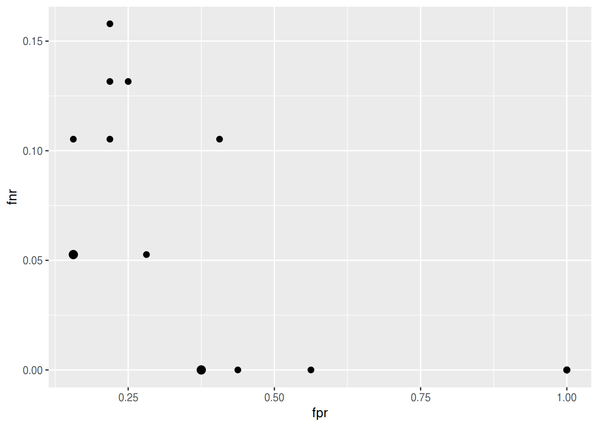

vignettes/tutorial/advanced_tune.Rmd
advanced_tune.RmdThe package supports a larger number of tuning algorithms, which can all be looked up and selected via TuneControl(). One of the cooler algorithms is iterated F-racing from the irace::irace() package (technical description here). This not only works for arbitrary parameter types (numeric, integer, discrete, logical), but also for so-called dependent / hierarchical parameters:
ps = makeParamSet(
makeNumericParam("C", lower = -12, upper = 12, trafo = function(x) 2^x),
makeDiscreteParam("kernel", values = c("vanilladot", "polydot", "rbfdot")),
makeNumericParam("sigma", lower = -12, upper = 12, trafo = function(x) 2^x,
requires = quote(kernel == "rbfdot")),
makeIntegerParam("degree", lower = 2L, upper = 5L,
requires = quote(kernel == "polydot"))
)
ctrl = makeTuneControlIrace(maxExperiments = 200L)
rdesc = makeResampleDesc("Holdout")
res = tuneParams("classif.ksvm", iris.task, rdesc, par.set = ps, control = ctrl,
show.info = FALSE)
df = as.data.frame(res$opt.path)
print(head(df[, -ncol(df)]))
## C kernel sigma degree mmce.test.mean dob eol
## 1 2.345763 polydot NA 2 0.04 1 NA
## 2 10.275488 vanilladot NA NA 0.02 1 NA
## 3 2.595082 polydot NA 4 0.10 1 NA
## 4 -4.176448 rbfdot -7.601708 NA 0.68 1 NA
## 5 4.040167 vanilladot NA NA 0.02 1 NA
## 6 10.677478 polydot NA 4 0.10 1 NA
## error.message
## 1 <NA>
## 2 <NA>
## 3 <NA>
## 4 <NA>
## 5 <NA>
## 6 <NA>See how we made the kernel parameters like sigma and degree dependent on the kernel selection parameters? This approach allows you to tune parameters of multiple kernels at once, efficiently concentrating on the ones which work best for your given data set.
We can now take the following example even one step further. If we use the makeModelMultiplexer() we can tune over different model classes at once, just as we did with the SVM kernels above.
base.learners = list(
makeLearner("classif.ksvm"),
makeLearner("classif.randomForest")
)
lrn = makeModelMultiplexer(base.learners)Function makeModelMultiplexerParamSet() offers a simple way to construct a parameter set for tuning: The parameter names are prefixed automatically and the requires element is set, too, to make all parameters subordinate to selected.learner.
ps = makeModelMultiplexerParamSet(lrn,
makeNumericParam("sigma", lower = -12, upper = 12, trafo = function(x) 2^x),
makeIntegerParam("ntree", lower = 1L, upper = 500L)
)
print(ps)
## Type len Def
## selected.learner discrete - -
## classif.ksvm.sigma numeric - -
## classif.randomForest.ntree integer - -
## Constr Req Tunable
## selected.learner classif.ksvm,classif.randomForest - TRUE
## classif.ksvm.sigma -12 to 12 Y TRUE
## classif.randomForest.ntree 1 to 500 Y TRUE
## Trafo
## selected.learner -
## classif.ksvm.sigma Y
## classif.randomForest.ntree -
rdesc = makeResampleDesc("CV", iters = 2L)
ctrl = makeTuneControlIrace(maxExperiments = 200L)
res = tuneParams(lrn, iris.task, rdesc, par.set = ps, control = ctrl,
show.info = FALSE)
df = as.data.frame(res$opt.path)
print(head(df[, -ncol(df)]))
## selected.learner classif.ksvm.sigma classif.randomForest.ntree
## 1 classif.ksvm 5.459183 NA
## 2 classif.ksvm -11.194386 NA
## 3 classif.ksvm 9.999280 NA
## 4 classif.randomForest NA 383
## 5 classif.randomForest NA 248
## 6 classif.ksvm -9.148848 NA
## mmce.test.mean dob eol error.message
## 1 0.52000000 1 NA <NA>
## 2 0.70000000 1 NA <NA>
## 3 0.70000000 1 NA <NA>
## 4 0.07333333 1 NA <NA>
## 5 0.06666667 1 NA <NA>
## 6 0.53333333 1 NA <NA>During tuning you might want to optimize multiple, potentially conflicting, performance measures simultaneously.
In the following example we aim to minimize both, the false positive and the false negative rates (fpr and fnr). We again tune the hyperparameters of an SVM (function kernlab::ksvm()) with a radial basis kernel and use sonar.task() for illustration. As search strategy we choose a random search.
For all available multi-criteria tuning algorithms see TuneMultiCritControl().
ps = makeParamSet(
makeNumericParam("C", lower = -12, upper = 12, trafo = function(x) 2^x),
makeNumericParam("sigma", lower = -12, upper = 12, trafo = function(x) 2^x)
)
ctrl = makeTuneMultiCritControlRandom(maxit = 30L)
rdesc = makeResampleDesc("Holdout")
res = tuneParamsMultiCrit("classif.ksvm", task = sonar.task,
resampling = rdesc, par.set = ps,
measures = list(fpr, fnr), control = ctrl, show.info = FALSE)
res
## Tune multicrit result:
## Points on front: 5
print(head(df[, -ncol(df)]))
## selected.learner classif.ksvm.sigma classif.randomForest.ntree
## 1 classif.ksvm 5.459183 NA
## 2 classif.ksvm -11.194386 NA
## 3 classif.ksvm 9.999280 NA
## 4 classif.randomForest NA 383
## 5 classif.randomForest NA 248
## 6 classif.ksvm -9.148848 NA
## mmce.test.mean dob eol error.message
## 1 0.52000000 1 NA <NA>
## 2 0.70000000 1 NA <NA>
## 3 0.70000000 1 NA <NA>
## 4 0.07333333 1 NA <NA>
## 5 0.06666667 1 NA <NA>
## 6 0.53333333 1 NA <NA>The results can be visualized with function plotTuneMultiCritResult(). The plot shows the false positive and false negative rates for all parameter settings evaluated during tuning. Points on the Pareto front are slightly increased.
